This project visualizes my personal tea consumption along many other factors and data that can be found behind it. The map features various countries that my tea comes from and includes the farmers and their stories behind it. A majority of my
tea is purchased through Adagio Teas, a company that highlights their direct involvement with their tea source to raise the living and working standards of growers.
TEA EXPORTS (US$) | 2018 - 2019
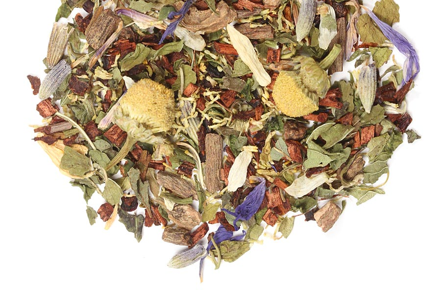
40 Winks
Herbal Tea | No caffeine | Steep at 212° for 5-10 min
Smells weird, tastes good. Pleasant, slightly minty and soothing.
4.3
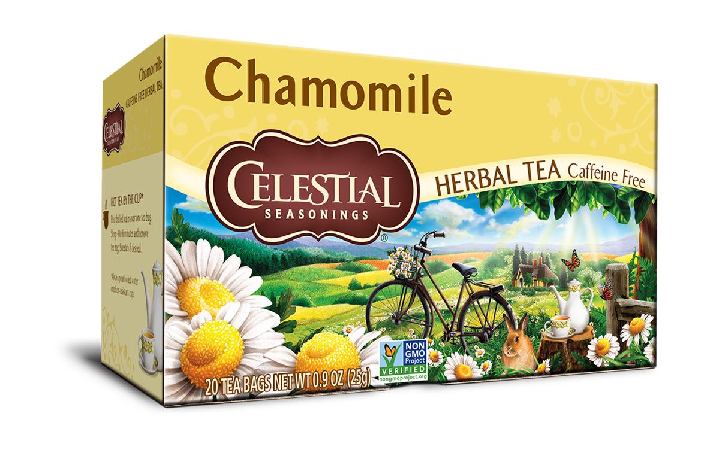
Chamomile
Herba Tea | No caffeine | Steep at 200° for 4-6 min
Floral and sweet. Puts me in a soothing and calm mood.
4
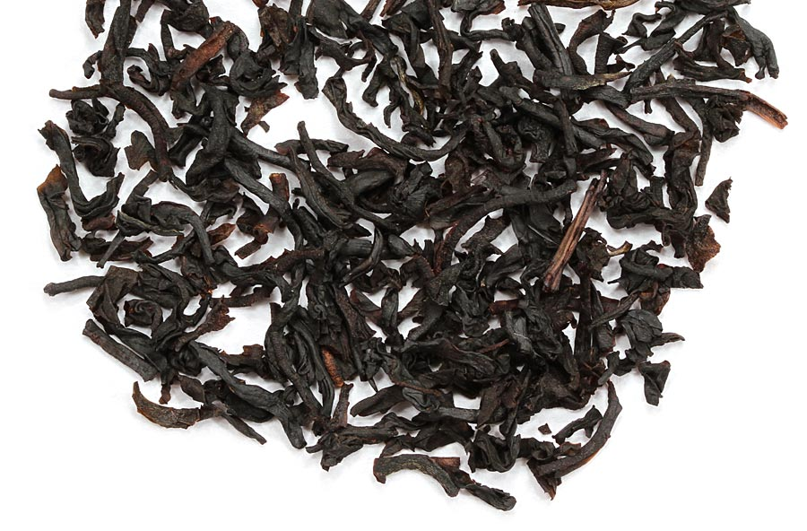
Cream Black
Black Tea | High caffeine | Steep at 212° for 3 min
Actually has cream taste? Even better with more cream. Has a rich flavor.
5
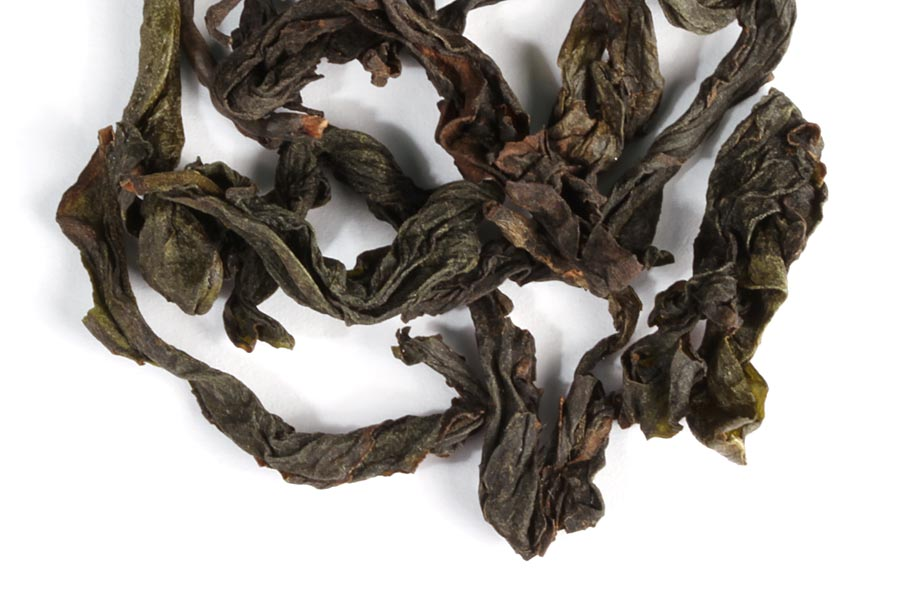
Fujian Rain
Oolong Tea | Moderate caffeine | Steep at 195° for 2-3 min
Very interesting, has a mineral "rock taste". Earthy smell.
4
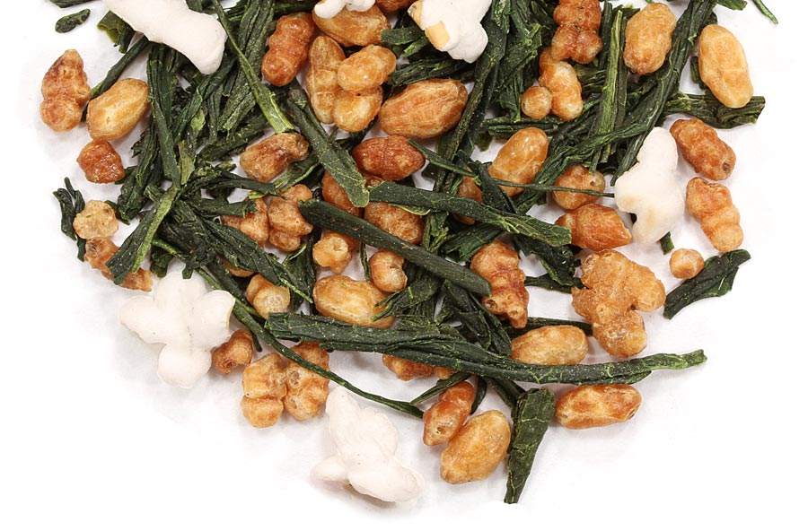
Genmai Cha
Green Tea | Moderate caffeine | Steep at 180° for 2-3 min
Has toasted popped rice! Very nutty and almost savory taste. Good to use in ochazuke too.
5
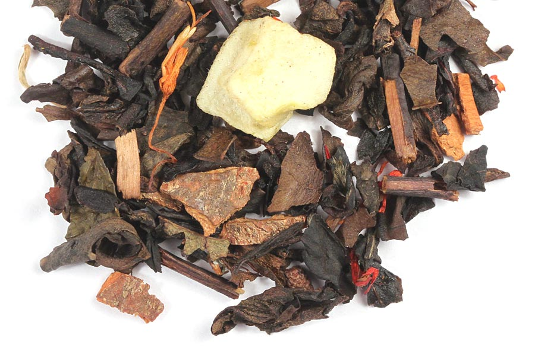
Maple Creme Oolong
Oolong Tea | Moderate caffeine | Steep at 212° for 3-5 min
Delicate maple flavor with warm spices.
4.6
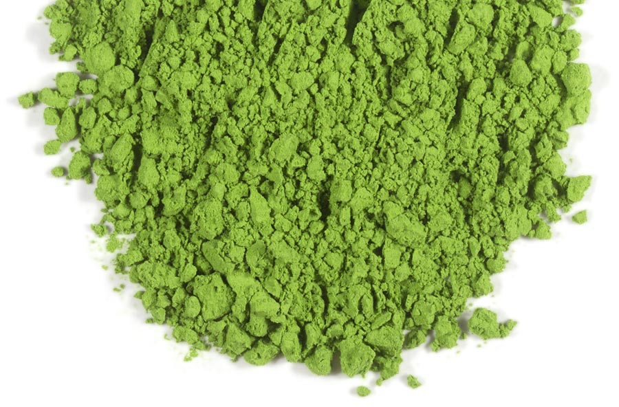
Matcha
Green Tea | High caffeine | Steep at 170° for 2 min
Vibrant color and creamy when whisked. Perfect for a matcha latte.
4.5
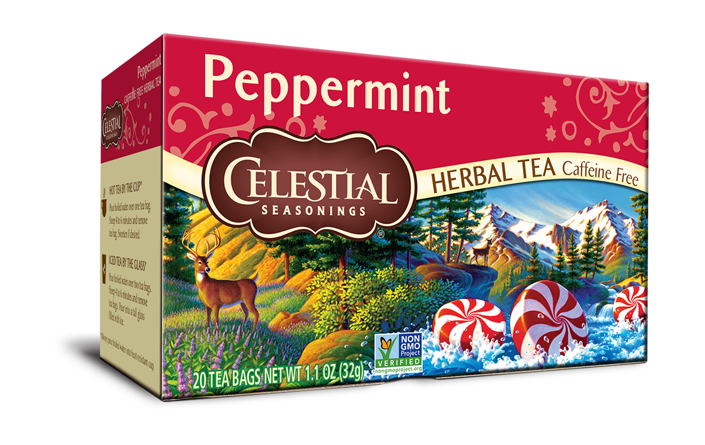
Peppermint
Herbal Tea | No caffeine | Steep at 200° for 4-6 min
Strong peppermint flavor. Need a specific mood for it, doesn't taste bad. Might try it iced...
3.5
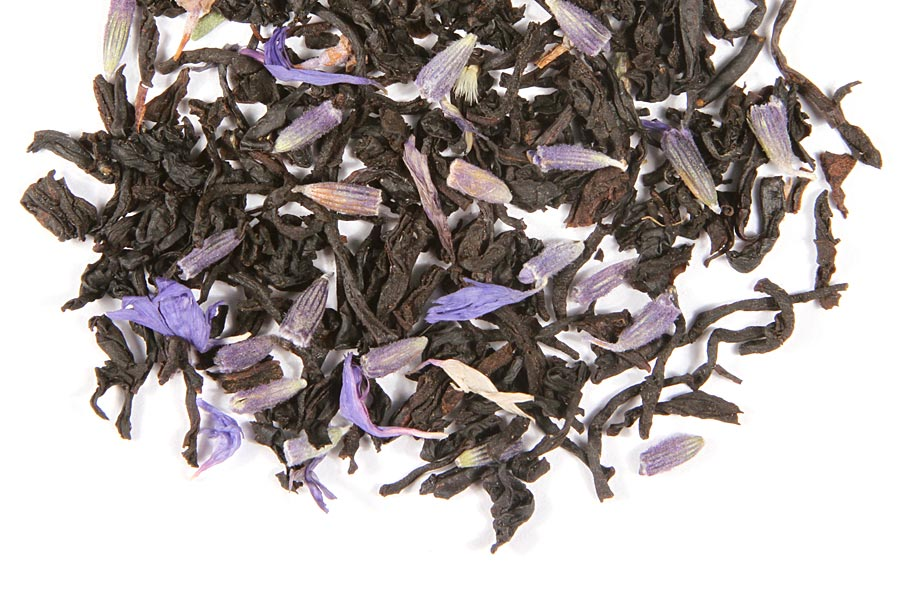
Earl Grey Lavender
Black Tea | High caffeine | Steep at 212° for 3-5 min
Strong flavor. Hints of vanilla and lavender. Great cup to start in the morning.
5
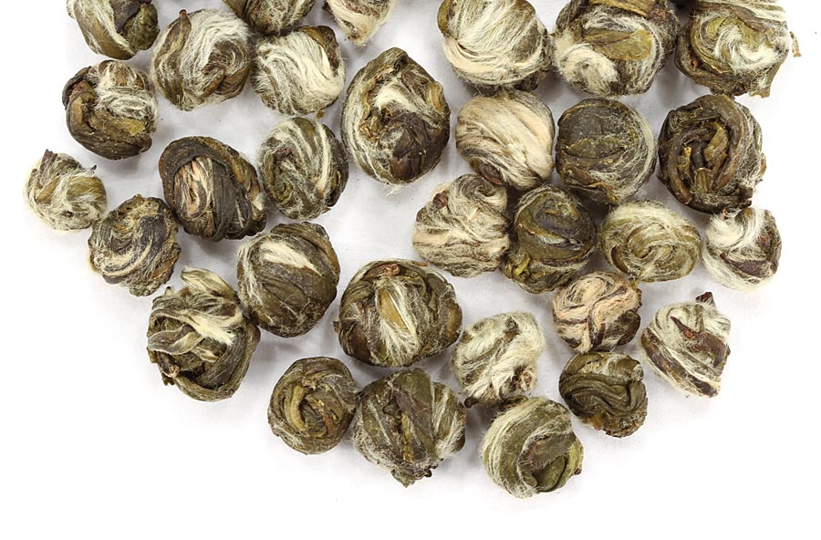
Jasmine Phoenix Pearls
Green Tea | Moderate caffeine | Steep at 195° for 2-3 min
Soft flavor with lovely floral scent. Mild and sweet. Fun to watch pearls unfurl.
6
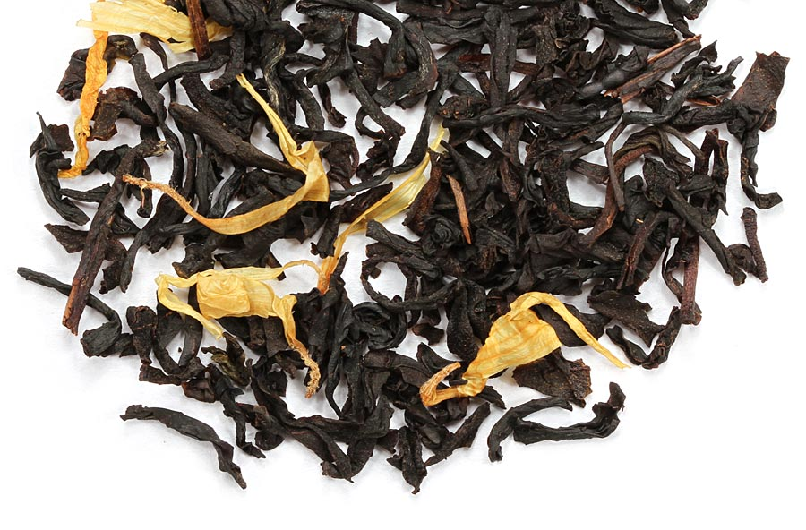
Peach
Black Tea | High caffeine | Steep at 212° for 3 min
Smells wonderful and sweet. Light and refreashing cold on a hot day. Could be stronger.
4
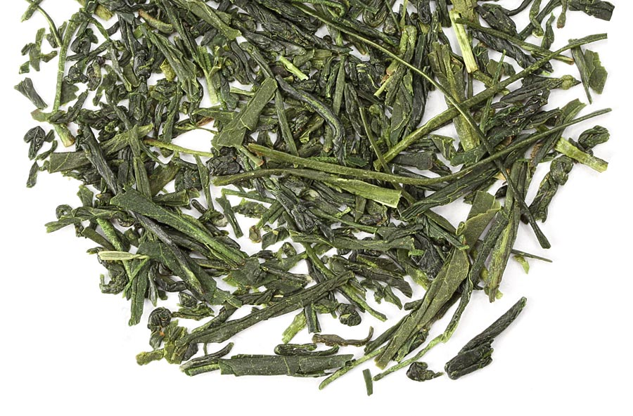
Sencha Overture
Green Tea | Moderate caffeine | Steep at 165° for 2-3 min
Very grassy and vegetal. Like drinking a soup. Not your typical morning cup.
4.3
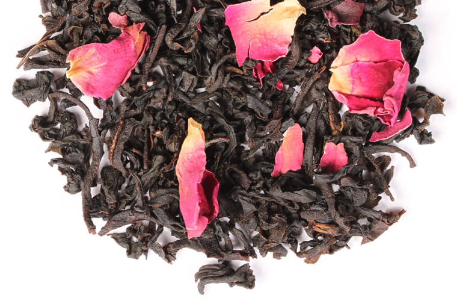
Summer Rose
Black Tea | High caffeine | Steep at 212° for 3 min
Reminds me of being in a garden. Fragrant and pleasant, great floral taste.